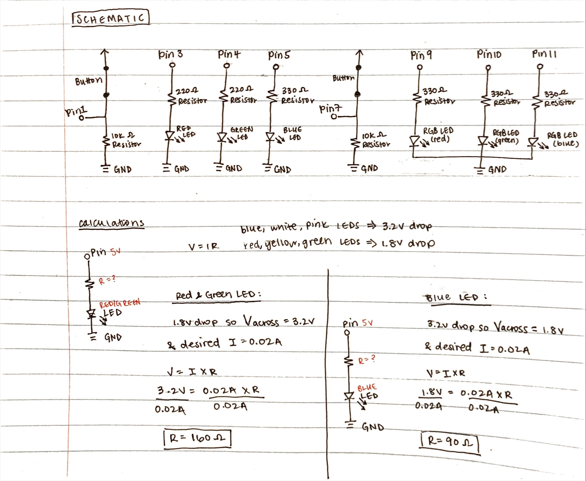
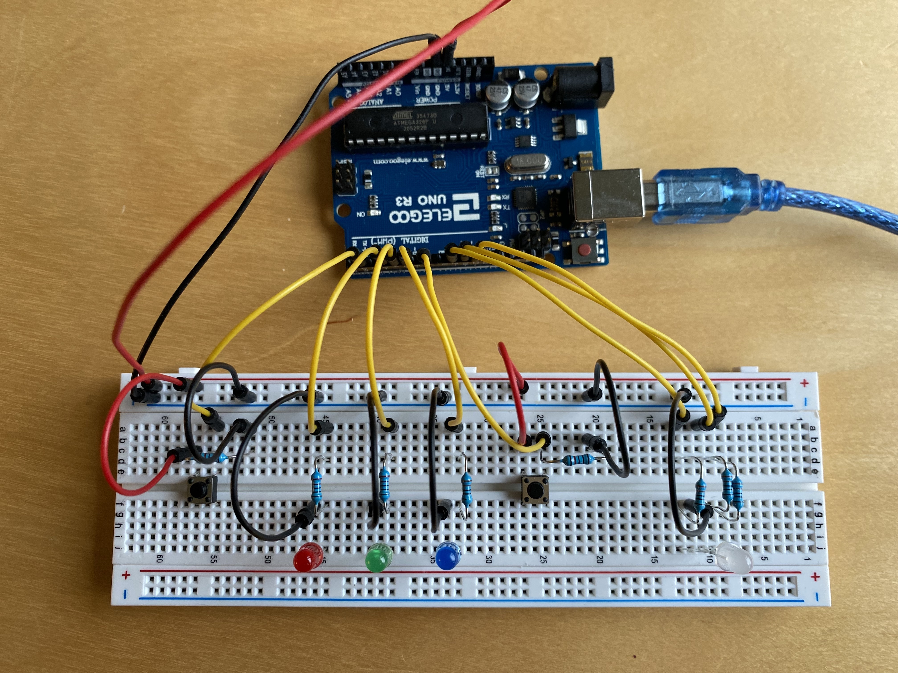
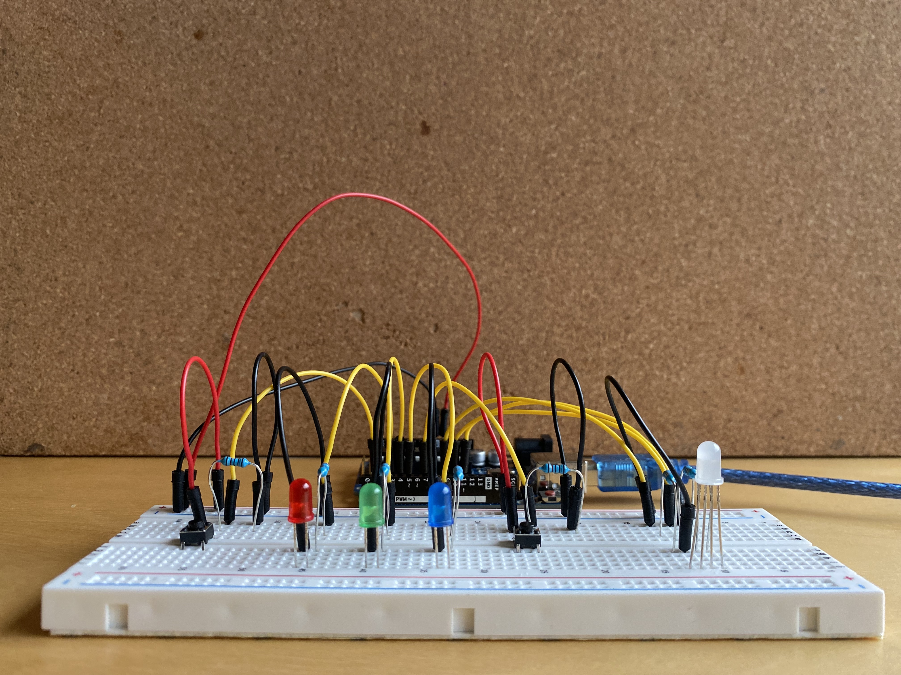

create a schematic for a circuit containing several LEDs and a button or tilt switch connected to Arduino
implement this circuit using a breadboard
write firmware in Arduino to make at least one of the LEDs fade
the code must use:
a for-loop
digitalWrite()
digitalRead()
analogWrite()
I decided to create a LED color selector circuit 🔴 🟢 🔵 by using red, green, and blue LEDs.
Here is a gif of my LED color selector circuit in action!
Schematic
 Schematic and calculations
for my circuit.
Since I was using red, green, and blue LEDs for my circuit, I did two sets of calculations to determine what the appropriate
resistance to use for each LED: one for the red and green LEDs, and another set of calculations for the blue LED. For red, yellow,
and green LEDs, they all have 1.8V voltage drop, and for blue, pink, and white LEDs, they all have 3.2 voltage drop. The
desired current for all the LEDs I used was 20mA, or 0.02A (found based on the datasheets for the LEDs). When calculating the
appropriate resistance to be used in the circuit, I started with calculating the voltage across.
Red and Green LEDs:
Knowing that the Arduino gives 5V, I calculated the voltage across as 3.2V (5V - 1.8V drop = 3.2V across). Using the known voltage across and
the desired current, I then used Ohm's Law with the equation V=IR to get a value R=160Ω for resistance. To ensure
that I did not overload the LEDs and cause them to burn out, I decided to round up and use a 220Ω resistor (shown in schematic
above calculations).
Blue LED: Knowing that the Arduino gives 5V, I calculated the voltage across as 1.8V
(5V - 3.2V drop = 1.8V across). Using the known voltage across and the desired current, I then used Ohm's Law with the equation
V=IR to get a value R=90Ω for resistance. To decrease the brightness of the LED, I decided to round up and use a
330Ω resistor (shown in schematic above calculations).
RGB LED: For the RGB LED, I used the calculations
above for each corresponding color (red, green, and blue) for the LED. I decided to use a 330Ω resistor for all three for
consistency with the Blue LED.
Buttons: For each button, I decided to use a 10kΩ resistor as 10k resistors limit the current of buttons to a
lot less than the max current. For the button to work, we would need a nominal amount of current to flow, and the lower the amount, the less
power would be used (information from Prof Nadya in the class discord).
Circuit
For my circuit, to make the traffic light, I used a red LED, yellow LED, and green LED.
 Top View of my Circuit
 Side View of my Circuit
Arduino Code
const int fade_pin = 7; // pin used for "fade" button to fade the RGB LEDconst int choose_color_pin = 1; // pin used for "choose color" button to choose a color (red, green, or blue)const int leds_pins[] = {3, 4, 5}; // pins for the red, green, green and blue LEDsconst int rgb_led_pin[] = {9, 10, 11}; // pins for the RGB LEDconst int num_leds = 3; // number of total leds that a user can choose a color from (red, green, or blue)int num_button_press = 0; // the number of times the choose color button is pressed by the user // the setup function runs once when you press reset or power the boardvoidsetup() {
// initialize pins for the LEDS as an outputfor (int i = 0; i < num_leds; i++) {
// pins for the red, green, and blue LEDspinMode(leds_pins[i], OUTPUT);
// pins for the RGB LEDpinMode(rgb_led_pin[i], OUTPUT);
}
// initialize pins for the two buttons (fade button and choose color button) as an inputpinMode(fade_pin, INPUT);
pinMode(choose_color_pin, INPUT);
}
// the loop function runs over and over again forevervoidloop() {
// USER CHOOSES A LED COLOR //// loop until the fade button is pressedwhile (digitalRead(fade_pin) == LOW) {
// if choose color button is pressedif (digitalRead(choose_color_pin) == HIGH) {
// increment number of times the button is pressed
num_button_press++;
// if number of presses reaches past the number of leds (3), restart at 0// this ensures that the value of num_button_press is either: 0, 1, or 2
num_button_press %= num_leds;
// wait for 300msdelay(300);
}
// update the LEDs based on how many times the user has pressed the choose color button.// button pressed once -> green LED// button pressed twice -> blue LED// button pressed three times -> red LEDfor (int i = 0; i < num_leds; i++) {
digitalWrite(leds_pins[i], num_button_press == i);
}
// set the starting color of the RGB LEDanalogWrite(rgb_led_pin[0], 10); // red coloranalogWrite(rgb_led_pin[1], 10); // green coloranalogWrite(rgb_led_pin[2], 10); // blue color
}
// FADE THE RGB LED //// if fade button is pressedif (digitalRead(fade_pin) == HIGH) {
// fade the RGB LED from 0 to 255 to the corresponding color based on how many times the // user pressed the choose color button for (int i = 0; i < 256; i++) {
analogWrite(rgb_led_pin[num_button_press], i);
// wait 20msdelay(20);
}
// wait 50msdelay(50);
}
}
Above is a code snippet of my Arduino code. For my code, I initialized the pins as OUTPUTs with their corresponding colors, with Pin3 for the Red LED, Pin4
for the Green LED, and Pin5 for the Blue LED using an array [] and for-loop. I initialized the buttons as INPUTs with Pin1 and Pin7. I used the loop() function to have the code run over and over
again forever. In this loop, I set the code to run when the fade button has not been pressed (using a while loop) so users can press the choose color button to choose a LED color
(red, green, or blue). When the choose color button is pressed, the red, green, and blue LEDs light up in a cycle every time the button is pressed using digitalWrite(). Once the user presses
the fade button, the RGB LED fades to the corresponding color that is chosen. I used digitalRead() to check the status of the button and see if the button was pressed
(ex: digitalRead(fade_pin) == HIGH) or not (ex: digitalRead(fade_pin) == LOW). I analogWrite() was used to fade the RGB LED by color mixing - important to note here that analogWrite() only works
with GPIO pins labeled with '~' (pins 3, 5, 9, 10, 11) -> I had the RGB LED connected to the pins 9, 10, and 11. View the arduino code
here!
Video of the choosing the LED color using the choose color button (left button), and fading the RGB LED to the chosen color by pressing the fade button (right button).